Khaana (खाना in Devanagari) is a familiar Hindi and Urdu word that means food, meals, and eating. Khaana.org explores the word, its meaning and origins, and how the idea of "food" is expressed across South Asia's many languages.
Find Indian Recipes Food Fun Facts Healthy Indian Recipes Tell Khaana.com what is in your kitchen and it will tell you what you can cook tonight.
Twenty-one regional kitchens, each with its own history, staples and techniques. You can learn about them on Khaana.com.
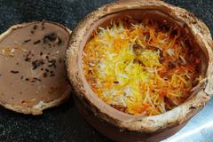
Awadhi / Lucknowi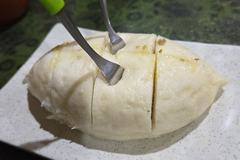
Pahari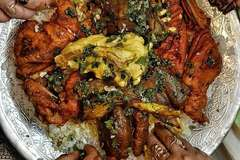
Kashmiri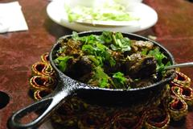
Punjabi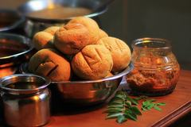
Rajasthani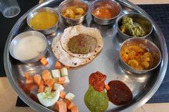
Gujarati Maharashtrian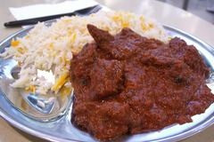
Goan Karnataka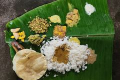
Kerala Tamil Nadu Andhra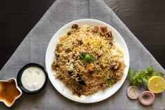
Hyderabadi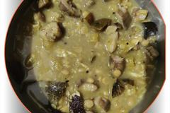
Odia Bihari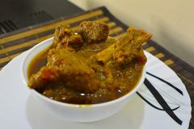
Bengali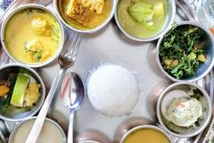
Northeast Indian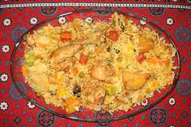
Sindhi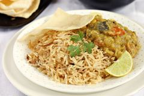
Parsi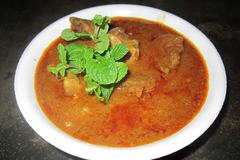
Anglo-Indian Indo-ChinesePhotographs from Wikimedia Commons under CC BY or CC BY-SA licences. Full credits, photographer by photographer.
Devanagari, formal transliteration, and the recommended English spelling, explained.
A noun ("food," "a meal") and a verb ("to eat"), with real Hindi sentences showing both.
Its roots in Sanskrit, its shared life in Hindi and Urdu, and a common mix-up with an unrelated Persian word.
Which South Asian languages actually use a form of "khaana," and which use entirely different words.
English spelling is khaana, with two a's. The two a's aren't there for looks. Each one stands for a separate vowel sound, a sound held long.
Read "khaana" as four sound-pieces rather than six separate letters:
Each of those two "a"s is a separate vowel sound, held long (e.g., "u" in "but" represents a short "a" sound). Spell the word with a single a, and you drop one of those sounds which will point to the wrong pronunciation. Writing khaana keeps proper sound.
In Hindi's native Devanagari script, the word is written खाना. Urdu, which uses the Perso-Arabic script instead, writes the same word as کھانا. Same word, same pronunciation, different writing system, because Hindi and Urdu share most of their everyday vocabulary while writing it differently.
Linguists and dictionaries typically transliterate खाना as khānā, using a macron (the line over the a) to mark a long vowel. This is part of IAST (International Alphabet of Sanskrit Transliteration) and similar systems used in academic writing on Hindi and Urdu.
Outside of academic writing, most people don't have easy access to a macron, so the long ā gets written by simply doubling the letter: khaana. This is a widely understood convention in informal Romanized Hindi (sometimes called "Hinglish"): a doubled vowel signals "hold this sound longer" the same way the macron does.
| Form | Example | Where you'll see it |
|---|---|---|
| Devanagari | खाना | Hindi text, signage, print |
| Perso-Arabic (Urdu) | کھانا | Urdu text, signage, print |
| Scholarly transliteration | khānā | Academic writing, dictionaries, linguistics |
| Common Romanization | khaana | Everyday writing, branding, social media |
| Simplified spelling | khana | Shortcut writing, when the long vowel is dropped. The pronunciation becomes incorrect/approximate |
Hindi distinguishes between a short a (अ, as in the "u" in "but") and a long ā (आ, held roughly twice as long). Both syllables in खाना carry that long ā, which is exactly what the four-piece breakdown above shows.
Both, depending on how it's used. Khaana is a noun meaning "food" or "a meal," and it's also the infinitive form of the verb "to eat." Used as a noun, खाना (khaana) simply means "food" or "a meal," in the general sense, not any specific dish. खाना (khaana) is also the infinitive form of the Hindi verb "to eat." Hindi infinitives regularly end in -nā (करना/karnā "to do," जाना/jānā "to go," खाना/khaana "to eat"), so this is not a coincidence of two look-alike words. It is one word, behaving the way Hindi infinitives behave. In practice, Hindi and Urdu speakers rarely find this ambiguous. "खाना बनाना" (khaana banānā) means "to cook" (literally, "to make food"). "खाना खाना" (khaana khaana) means "to eat" (literally, "to eat food," using both senses back to back). Sentence position and the surrounding grammar make the intended meaning clear, the same way "watch" can be a noun or a verb in English without causing confusion. Its roots trace back through Hindi and Urdu to a common Indo-Aryan verb for eating, with a false-friend mix-up along the way worth knowing about. Hindi and Urdu both descend from Sanskrit and its later spoken forms (Prakrit, then Apabhramsha), and खाना/کھانا (khaana) is generally traced to the Sanskrit verbal root khād- ("to chew, to eat"), seen in the Sanskrit verb खादति (khādati, "eats"). Over centuries of sound change as spoken Sanskrit evolved into the Prakrits and eventually into Hindi-Urdu, that root produced खाना (khaana), the modern infinitive "to eat," which (as covered in the meaning section) also became the everyday noun for "food." Here is where it gets confusing, and where a lot of casual internet explanations go wrong. There's a completely different word, Persian خانه (khāna, "house" or "room"), that also gets Romanized as "khana." It shows up as a suffix in many Hindi/Urdu compound words borrowed from Persian: kārkhānā ("workhouse," i.e. factory), dawākhānā ("medicine-house," i.e. pharmacy or clinic), ḍākkhānā ("mail-house," i.e. post office). This Persian khāna ("house") and the Hindi-Urdu khaana ("food"/"to eat") covered on this site are unrelated words from different language families that happen to sound and Romanize almost identically. Sanskrit and Persian belong to different branches of the broader Indo-European language family, and this pair is a coincidence of sound, not a shared origin. In careful transliteration, the vowel length and stress often differ slightly between the two, but in everyday Roman spelling, the overlap is a genuine, common source of confusion. Not necessarily, and that's the interesting part. South Asia has dozens of languages from at least two entirely unrelated language families. Some share khaana's root, some share only its verb, and some are completely unrelated. Most North and West Indian languages, along with Urdu, Nepali, and Bengali, belong to the Indo-Aryan branch of the Indo-European language family, the same broad family English belongs to, however distantly. Most South Indian languages, Tamil, Telugu, Kannada, and Malayalam, belong to a completely separate family, Dravidian, with no shared ancestry with Sanskrit or Hindi at all. That split is the main reason "food" vocabulary looks so different from one end of India to the other. A few rows are worth a closer look: Punjabi and Nepali are close enough to Hindi, and geographically and historically intertwined enough, that they use essentially the same word. Marathi, Gujarati, and Bengali are also Indo-Aryan and do preserve a form of the same kha- verb root for "to eat," but their everyday noun for "food" drifted to a different derived word over time. That is a normal thing for related languages to do. They keep a shared root and build different words on top of it. Telugu, Tamil, Kannada, and Malayalam aren't Indo-Aryan at all, so there's no shared root to find. Their food words (often borrowed from Sanskrit for more formal terms, like āhāram) come from an entirely separate linguistic history. Any resemblance to Hindi vocabulary in Dravidian languages tends to come from separate, later Sanskrit borrowing, not a common ancestor.Does khaana mean "food," or "to eat"?
As a noun: food, a meal
As a verb: to eat
Context does the work
Where does khaana come from?
A shared Indo-Aryan root
The Persian false friend: -khana
Does every South Asian language say "khaana"?
Two language families, one region
Language Family Common word(s) for food / meal Related to khaana's root? Hindi Indo-Aryan खाना (khaana) Yes, direct cognate Urdu Indo-Aryan کھانا (khaana) Yes, the same word Punjabi Indo-Aryan ਖਾਣਾ (khāṇā) Yes, direct cognate Nepali Indo-Aryan खाना (khaana) Yes, direct cognate Marathi Indo-Aryan जेवण (jevan, "meal"); खाणे (khāṇe, "eating") Partial, verb shares the root; common noun differs Gujarati Indo-Aryan ખોરાક (khorāk, "food"); ખાવું (khāvũ, "to eat") Partial, verb shares the root; common noun differs Bengali Indo-Aryan খাবার (khābār) Partial, shares the kha- root in a different derived form Sanskrit Indo-Aryan (classical) भोजन (bhojana), अन्न (anna) Root only, source of khād-/khā-, not this exact word Tamil Dravidian உணவு (uṇavu) No, unrelated language family Telugu Dravidian ఆహారం (āhāraṁ) No, unrelated language family Kannada Dravidian ಆಹಾರ (āhāra) No, unrelated language family Malayalam Dravidian ഭക്ഷണം (bhakṣaṇam) No, unrelated language family What "related" means
For the food itself, and the regional cooking behind it, visit Khaana.com.
Visit Khaana.com →